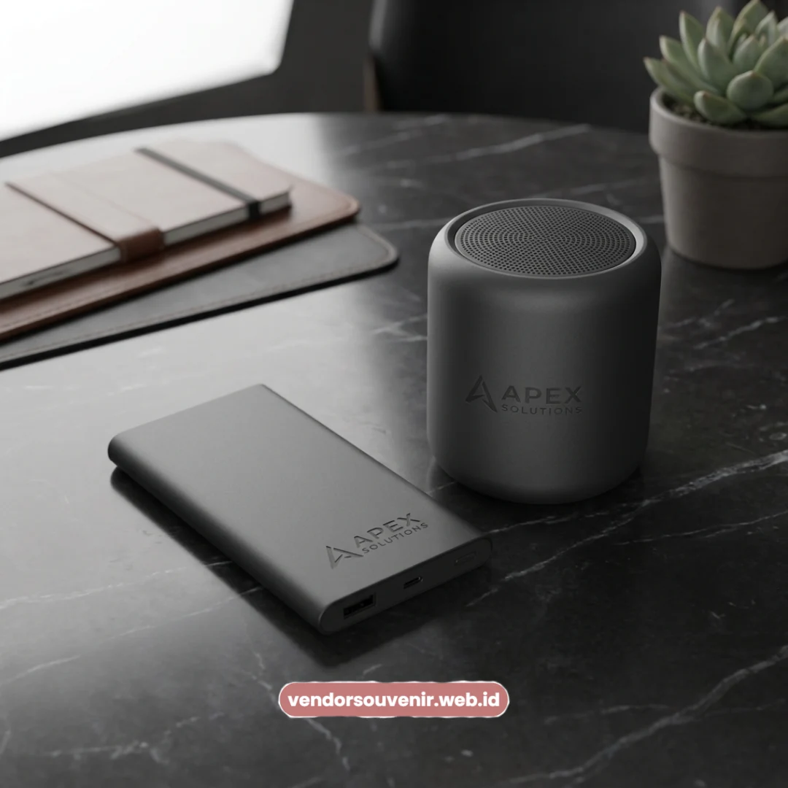
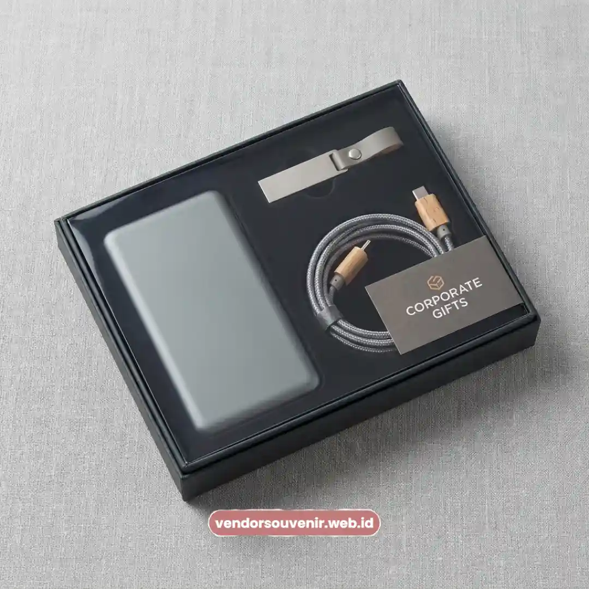

Daftar Isi
Seminarkit ID menyediakan souvenir teknologi custom logo seperti powerbank, speaker bluetooth, dan flashdisk.
Produk ini ditujukan khusus untuk apresiasi karyawan dan klien perusahaan Anda.
Souvenir teknologi seperti powerbank dan speaker bluetooth custom logo dipakai berulang dalam aktivitas sehari-hari.
Tersedia opsi flashdisk promosi dan aksesoris digital lain dengan branding logo perusahaan.
Proses printing UV logo memberikan hasil branding yang presisi dan tahan lama.
Kapasitas dan spesifikasi produk dapat disesuaikan dengan anggaran pengadaan korporat Anda.
Merchandise Korporat yang Terus Diminati
Souvenir teknologi menjadi kategori merchandise korporat yang terus diminati.
Hal ini dikarenakan sifatnya yang sangat fungsional dan sering dipakai ulang oleh penerima.
Berbeda dengan souvenir konvensional seperti mug atau notes yang cenderung cepat berpindah tempat.
Atau mungkin hanya digunakan sekali pada acara tertentu saja.
Powerbank, speaker bluetooth, dan flashdisk custom logo memberikan eksposur branding yang lebih konsisten.
Karena selalu melekat pada aktivitas kerja harian, baik di kantor maupun saat bepergian untuk urusan bisnis.
Variasi Souvenir Teknologi Custom Logo untuk Korporat
Seminarkit ID menyediakan beberapa kategori souvenir teknologi custom logo yang dapat dipilih.
Pilihannya dapat disesuaikan dengan jenis acara dan target penerima hadiah perusahaan Anda.
Beberapa kategori souvenir teknologi yang paling banyak dipesan meliputi beragam opsi menarik.
- Powerbank custom logo dengan berbagai pilihan kapasitas daya mAh.
- Speaker bluetooth custom logo untuk kebutuhan presentasi maupun hiburan ringan.
- Flashdisk promosi custom logo sebagai media penyimpanan sekaligus merchandise branding.
- Charger dan kabel data custom logo sebagai pelengkap paket gadget korporat.
- Paket bundling gadget korporat yang menggabungkan beberapa item dalam satu kemasan eksklusif.
Powerbank dan Speaker Bluetooth sebagai Pilihan Utama
Powerbank dan speaker bluetooth custom logo menjadi dua produk souvenir teknologi paling diminati.
Karena memiliki tingkat penggunaan yang tinggi pada aktivitas kerja maupun pribadi sehari-hari.
Powerbank custom logo sangat cocok dipilih untuk menargetkan penggunaan harian aktif.
Terutama bagi karyawan atau klien dengan mobilitas kerja yang sangat tinggi.
Sementara itu, speaker bluetooth custom logo lebih relevan untuk acara presentasi.
Atau momen gathering dan santai di sela-sela kepadatan kegiatan korporat.
Kombinasi keduanya dalam satu program souvenir dapat menjangkau kebutuhan penerima.
Meski kebutuhan mereka berbeda-beda, konsistensi branding perusahaan tetap terjaga.
Hal ini menjadikan set gadget elektronik selalu unggul di mata para penerimanya.

Paket Souvenir Teknologi Custom Logo
Flashdisk Promosi dan Aksesoris Digital
Flashdisk promosi dan aksesoris digital lain menjadi pelengkap souvenir teknologi yang sempurna.
Terlebih dengan biaya pengadaan yang relatif lebih terjangkau untuk kuantitas produksi yang besar.
Flashdisk promosi custom logo umumnya dipilih untuk acara dengan jumlah peserta masif.
Seperti seminar, konferensi, atau pelatihan internal skala nasional perusahaan Anda.
Sebab harga satuannya tentu lebih ringan dibandingkan produk powerbank atau speaker.
Aksesoris digital lain, seperti stand ponsel atau kabel data, juga sangat disarankan untuk ditambahkan.
Standar Kualitas dan Sertifikasi Elektronik
Sertifikasi SNI dan Keamanan Produk
Produk souvenir teknologi dari Seminarkit ID selalu memperhatikan standar keamanan elektronik.
Termasuk kualitas hasil branding logo perusahaan agar tetap awet dan terlihat mewah.
Produk elektronik seperti powerbank sebaiknya memenuhi standar keamanan di Indonesia.
Termasuk sertifikasi SNI elektronik untuk memastikan produk aman digunakan dalam jangka panjang.
Kapasitas mAh dan Fitur Fast Charging
Kapasitas baterai pada powerbank custom logo umumnya berkisar antara 5.000 mAh hingga 20.000 mAh.
Pemilihan kapasitas ini sepenuhnya disesuaikan dengan kebutuhan serta preferensi perusahaan Anda.
Fitur fast charging turut menjadi pertimbangan penting bagi perusahaan modern saat ini.
Demi memberikan nilai tambah fungsional pada setiap unit souvenir yang dibagikan.
Custom Packaging Box dan Printing UV
Kemasan box custom dan teknik printing UV logo digunakan secara ekstensif pada produk ini.
Tujuannya untuk menghasilkan tampilan souvenir teknologi yang rapi, memukau, dan profesional.
Teknik UV print dipilih karena mampu mencetak logo berwarna penuh dengan presisi tinggi.
Khususnya pada permukaan material produk elektronik berbahan dasar plastik maupun metal.
Cocok untuk Seminar, Onboarding, dan Apresiasi
Souvenir teknologi custom logo sangat relevan digunakan pada berbagai momen kegiatan korporat.
Mulai dari acara seminar, onboarding karyawan baru, hingga penghargaan serta apresiasi kinerja.
Pada acara seminar, item seperti flashdisk atau powerbank sering dijadikan kit utama acara.
Untuk onboarding, paket gadget korporat memperkuat kesan profesional dalam sebuah welcome kit.
Sementara bagi program apresiasi, souvenir teknologi menyajikan nilai manfaat yang jelas lebih tinggi.
Dibandingkan memberikan hadiah konvensional yang sifatnya hanya sebagai pajangan dekoratif semata.
Melayani Pengadaan Souvenir Teknologi Skala Nasional
Seminarkit ID melayani pengadaan souvenir teknologi custom logo untuk perusahaan di berbagai kota besar.
Termasuk di kawasan industri wilayah Yogyakarta, Semarang, dan area strategis Malang.
Melayani pesanan dari perusahaan di kawasan tersebut, Seminarkit ID mendukung kebutuhan skala nasional.
Dengan proses konsultasi desain logo, kemasan, hingga spesifikasi produk secara transparan.
Seluruh pengerjaan disesuaikan dengan lokasi serta jadwal pelaksanaan acara masing-masing instansi.
Sehingga Anda dapat fokus pada kesuksesan acara, dan biarkan kami mengurus pengadaan souvenirnya.

Solusi Gift Set dari Vendor Terpercaya
Kesimpulan
Memilih souvenir teknologi sebagai merchandise perusahaan merupakan keputusan cerdas dan strategis.
Karena nilai fungsionalnya yang tinggi menjamin brand Anda selalu terlihat oleh penggunanya.
Baik melalui powerbank, speaker bluetooth, maupun aksesoris digital, dampaknya sangat positif.
Pastikan setiap produk dikemas secara premium dan dicetak menggunakan teknik branding berkualitas.
Percayakan kebutuhan pengadaan merchandise teknologi Anda hanya kepada vendor yang berpengalaman.
Dan jadikan momen korporat perusahaan Anda selalu diingat dengan hadiah yang penuh manfaat.
Ingin Memesan Souvenir Teknologi untuk Relasi Bisnis?
Kami siap membantu pengadaan corporate gift Anda dengan layanan terbaik.
Konsultasikan desain logo dan spesifikasi gadget eksklusif Anda kepada tim kami.
Mari ciptakan impresi modern untuk mitra bisnis Anda.
Dapatkan penawaran harga terbaik untuk pesanan korporat!
FAQ
Mengapa memilih souvenir teknologi untuk merchandise perusahaan?
Souvenir teknologi menjadi kategori merchandise korporat yang terus diminati karena sifatnya yang fungsional dan sering dipakai ulang oleh penerima dalam aktivitas harian.
Apa saja pilihan souvenir teknologi yang tersedia?
Pilihan yang tersedia meliputi powerbank custom logo, speaker bluetooth, flashdisk promosi, charger, kabel data, serta paket bundling gadget korporat.
Apakah kualitas printing logo pada souvenir teknologi awet?
Ya, proses printing UV logo memberikan hasil branding yang presisi dan tahan lama pada berbagai material permukaan produk elektronik.
Daerah mana saja yang dilayani untuk pengadaan souvenir ini?
Seminarkit ID melayani pengadaan souvenir teknologi custom logo untuk perusahaan di berbagai kota, termasuk Yogyakarta, Semarang, dan Malang, serta melayani skala nasional.
Maroon Souvenir
Partner Corporate Gift terpercaya di Indonesia. Berpengalaman melayani ratusan perusahaan sejak 2018.
Lihat Portofolio Kami